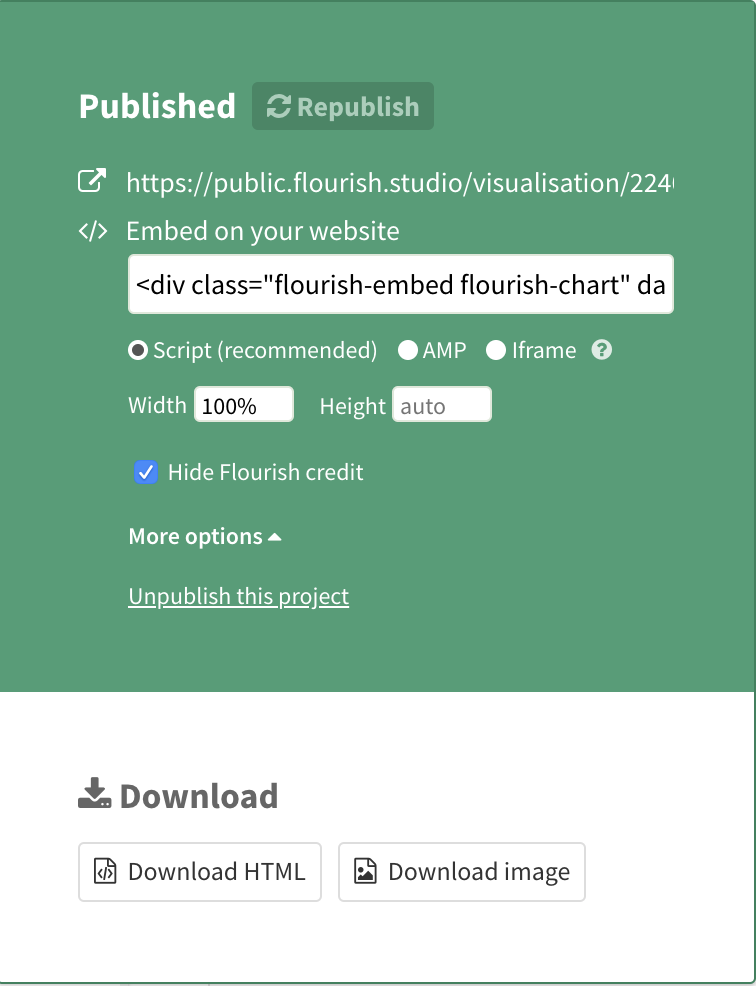
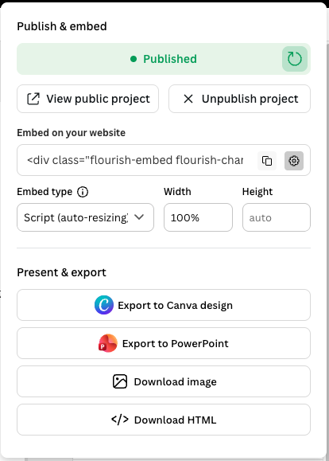
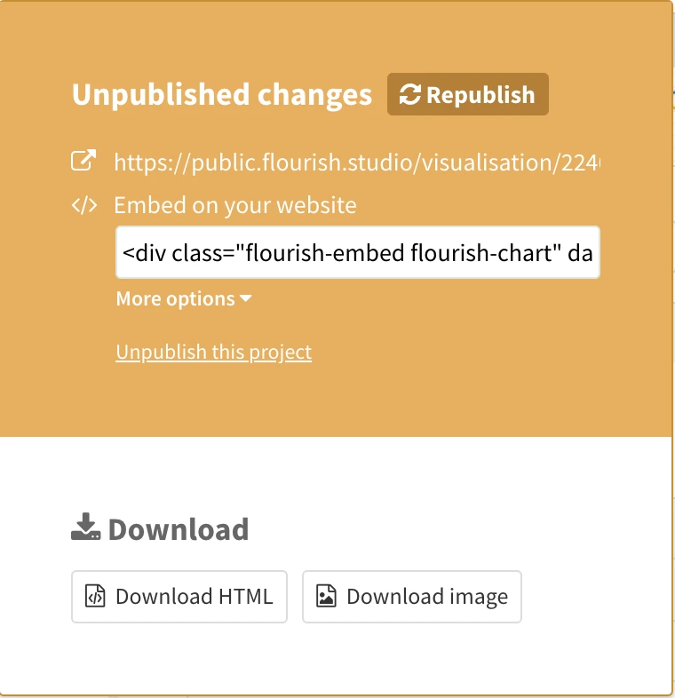
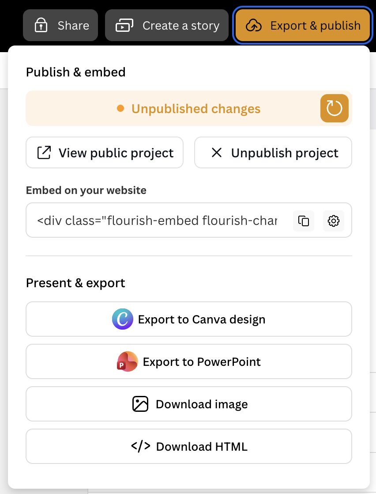
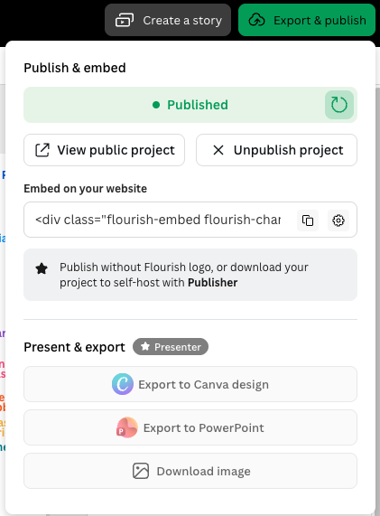
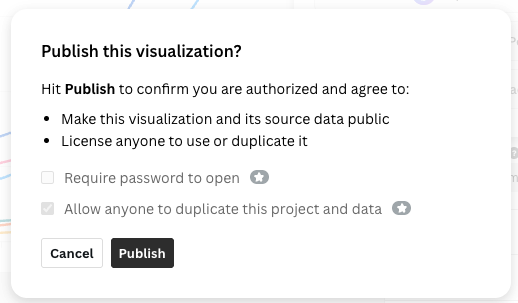
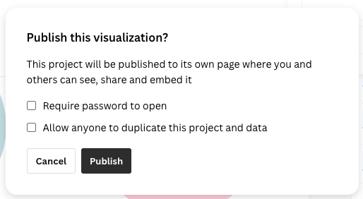

FLOURISH · PRODUCT ENGINEERING
Redesigning publishing and export
After Flourish launched the Presenter plan, I led development of the redesigned publishing and export panel. We rebuilt the Handlebars interface in React and made it easier for users to see what was live, whether they had unpublished changes and what they could do next.
Make the next action clear
We redesigned the panel around the existing workflows for approval, publishing and export. The old panel changed the colour of the whole publishing section to signal status. In the redesign, a status banner sits above dedicated controls for the public chart and its embed code. When there are unpublished changes, the banner includes a republish button that updates the live chart and its existing embeds.
Both versions let chart makers copy an embed code for a Flourish-hosted chart. Users on eligible plans could also download the HTML to host the chart themselves.
Users had asked for a quicker way to copy the embed code, so we added a one-click copy button. We also reworked the old 'More options' toggle into a settings button beside the embed code. Inside, an embed type dropdown replaced the radio buttons, with width and height fields alongside it.
The published panel before and after


When a live chart has unpublished changes


What changes by plan
The old panel used subtle colour differences to indicate paid features on free accounts. The redesign adds a Presenter badge beside gated export options and star icons beside locked settings. The Publisher prompt appears across plans.
In the free-account publish confirmation, password protection stays off and others can duplicate the project and its data. On an eligible paid plan, users can change both settings.



Leading the migration
The publishing panel was in a part of the Flourish platform I hadn’t worked in before. I got up to speed with the legacy code while leading the migration from Handlebars to React. I improved the panel’s accessibility and added missing automated tests to check that existing publishing and export workflows kept working through the redesign.
A platform engineer then joined the project, and we paired through each stage of the remaining work. We reviewed the migration, tested the panel, refined the implementation and rolled it out together.
From feature flag to full release
The initial migration was larger than I’d expected. We broke it into smaller component changes and put the new panel behind a feature flag.
We began rolling out the panel in February 2026. After launch, we fixed issues with republishing and copying links, then removed the legacy panel in March. The new component structure made it easier to add export options such as the PowerPoint button.